The Metropolis rule makes a move that lowers the energy
always, and a move that raises it by $\Delta E$ with
probability $e^{-\Delta E/k_BT}$. This factor is the ratio of
the Boltzmann probabilities of the new state and the old
one.
With a small random step as the move, the
rule reproduced the Boltzmann distribution of a particle in
a well. The run needed a burn-in, and it never used the
normalization of the distribution.
Simulated annealing lowered the
temperature during the run to find the minimum of a
cost.
Today the same rule is applied to a
different question, which is what a set of measurements says
about the parameters of a model.
Part I · Bayes' theorem
The likelihood, the prior, and the posterior
A thrown ball
A ball is thrown up, and its height is measured 15 times,
each time with an error of $0.15$ m. A least-squares fit
of
$$ y(t) = y_0 + v_0 t - \tfrac{1}{2} g t^2 $$
gives $g = 9.90\ \mathrm{m/s^2}$.
Parabolas with other values of $g$
also pass through the error bars.
The fit returns one number. We want
to know which values of $g$ the data allow, and how
probable each of them is.
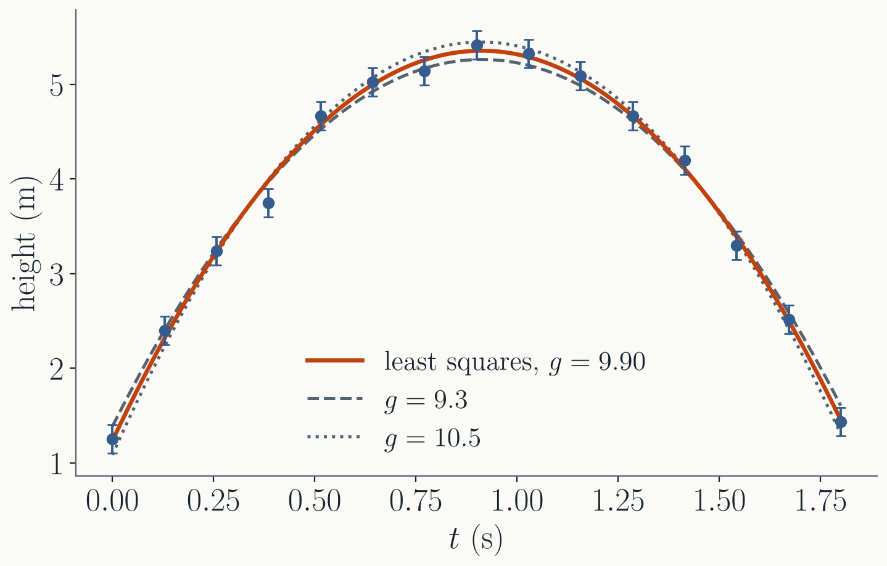
Two conditional probabilities
Write $\theta$ for the parameters of the model, here $(y_0,
v_0, g)$, and $D$ for the data. $P(A \mid B)$ is the
probability of $A$ given that $B$ is true.
The model gives $P(D \mid \theta)$. For
given parameters, it says how probable each outcome of the
measurement is.
We want $P(\theta \mid D)$. For the data
that were measured, it says how probable each value of the
parameters is.
These are different functions. Bayes'
theorem gives the second in terms of the first.
Bayes' theorem
The probability that $A$ and $B$ are both true can be
written in two ways,
$$ P(A \text{ and } B) = P(A \mid B)\,P(B) = P(B \mid A)\,P(A) . $$
Dividing by $P(B)$ gives Bayes' theorem:
$$ P(A \mid B) = \frac{P(B \mid A)\,P(A)}{P(B)} . $$
The theorem turns the probability of $B$
given $A$ into the probability of $A$ given $B$. It needs
$P(A)$, the probability of $A$ before anything is known about
$B$.
Example: a medical test
A test for a disease gives the right answer $99\%$ of the
time, for sick people and for healthy people alike. One
person in a thousand has the disease.
You take the test and the result is
positive. What is the probability that you have the
disease?
Counting the positive tests
Test $100{,}000$ people. Of the $100$ who are sick, $99$ test
positive. Of the $99{,}900$ who are healthy, $999$ test
positive.
$P(\theta)$ is called the prior.
It is what we know about the parameters before the
measurement. For the test it was the one in a thousand.
$P(D \mid \theta)$ is called the
likelihood. It is the probability that the model
gives to the data that were measured. For the test it was
the $99\%$.
$P(\theta \mid D)$ is called the
posterior. It is what we know about the parameters
after the measurement. For the test it was the $9\%$.
The likelihood of one measurement
At the time $t_i$ the model predicts $y(t_i; \theta)$,
and the measured value $y_i$ differs from it by an
error.
If the error is Gaussian with a known
width $\sigma$, the probability of measuring $y_i$ is
The numerator is easy to compute for any
one $\theta$. It takes one evaluation of the model.
The denominator is an integral over all
values of all the parameters. With more than a few
parameters it cannot be done on a grid.
The ratio of the posterior at two values
of $\theta$ does not contain $P(D)$, and it costs two
evaluations of the model.
Part II · Sampling the posterior
The Metropolis rule in the space of the parameters
Samples of the posterior
A sample of the posterior is one set of parameters
$(y_0, v_0, g)$, drawn at random with probability
$P(\theta \mid D)$. In a long list of samples, the values
that the data favour appear often, and the values that the
data exclude do not appear.
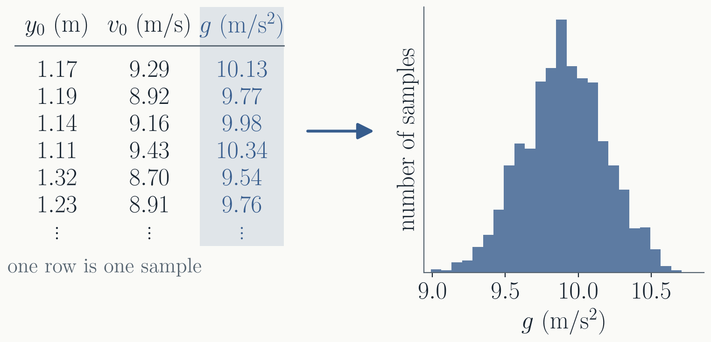
The histogram of the $g$ column is the
posterior of $g$. The mean of the column is the estimate of
$g$, and its standard deviation is the error.
The task is to produce such a list from
a posterior that is known only up to the constant $P(D)$.
The Metropolis rule gives the samples
The Metropolis rule works for any probability distribution
that is known up to a constant. For the posterior, a move
from $\theta$ to $\theta'$ is made with probability
The constant $P(D)$ cancels in the ratio,
so a move needs only $\chi^2$ and the prior at the two sets
of parameters.
With a flat prior, in which every value
of the parameters is equally probable before the
measurement, the ratio is $e^{-\Delta\chi^2/2}$. A move that
lowers $\chi^2$ is always made.
The states that the rule visits,
one for each step, are the list of samples of the
posterior.
The chain for the projectile experiment
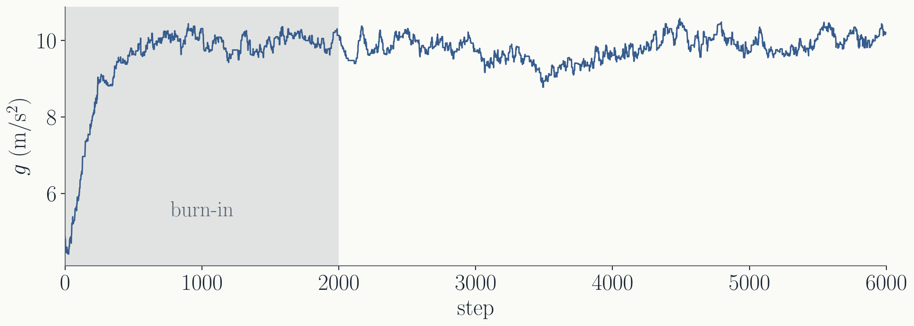
The prior is flat, and a move adds a small random step
to each of $y_0$, $v_0$ and $g$.
The chain starts from a poor guess for
the parameters and walks downhill in $\chi^2$ until it
reaches the values that the data allow.
After that it wanders around the best
fit. The first $2000$ steps are discarded as burn-in.
What the chain gives
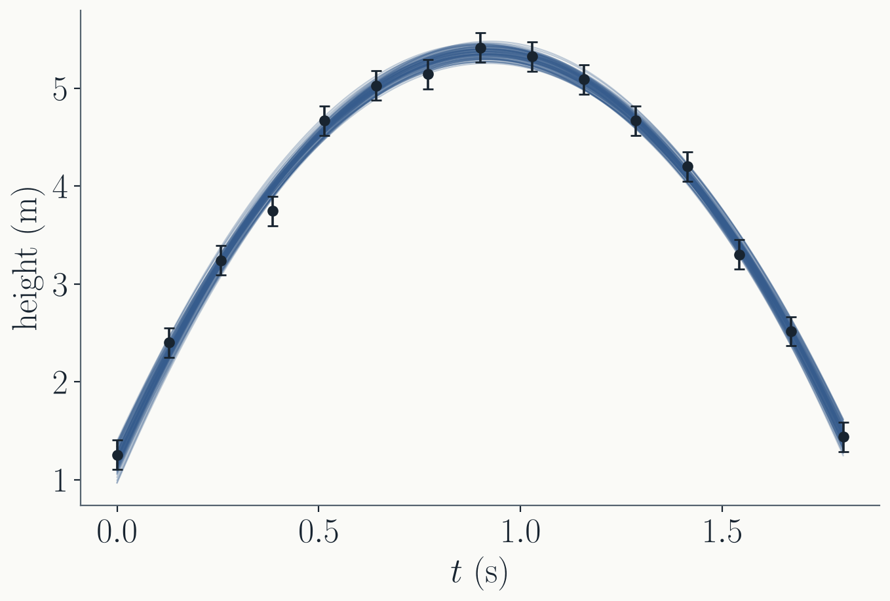
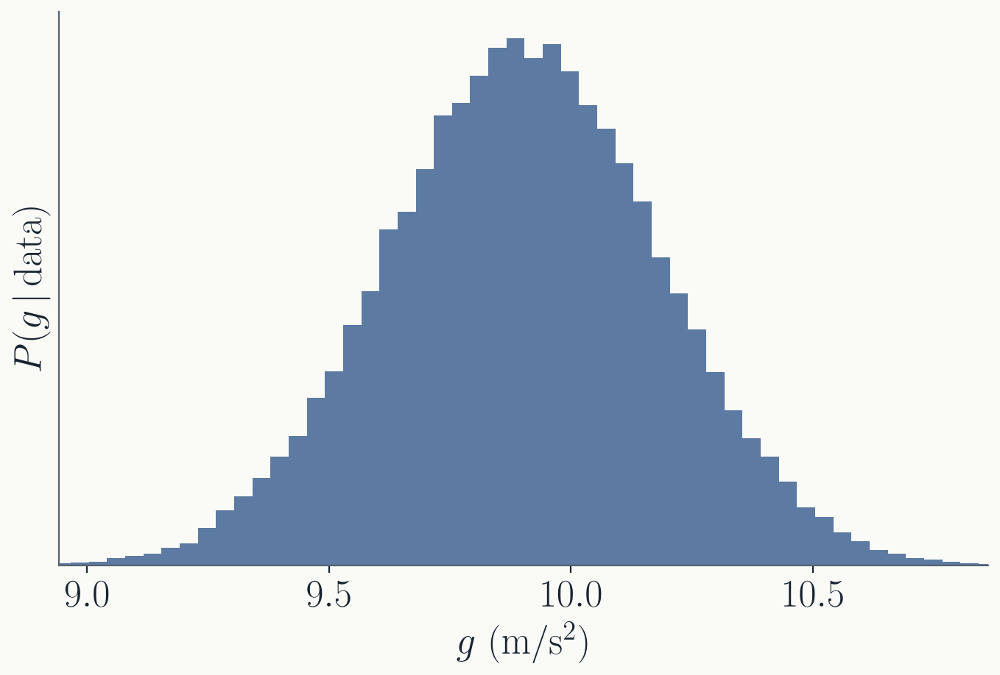
Each state of the chain is one parabola, and together
the states show the parabolas that the data allow.
The histogram of $g$ over the chain is
the posterior of $g$. Its mean and standard deviation give
$g = 9.90 \pm 0.28\ \mathrm{m/s^2}$.
The histogram counts every state,
whatever its $y_0$ and $v_0$, so the error of $g$ includes
the uncertainty of the other two parameters.
Check against least squares
The model of the ball is linear in its parameters, so
$\chi^2$ is exactly quadratic in $\theta$ and the
posterior is exactly a Gaussian. Its covariance matrix
is
where $\mathbf{A}$ is the matrix of the least-squares
problem.
The formula gives $0.283\
\mathrm{m/s^2}$ for the standard deviation of $g$, and
the chain gives $0.282$.
The chain did not use the formula.
Each step compared $\chi^2$ at two sets of
parameters.
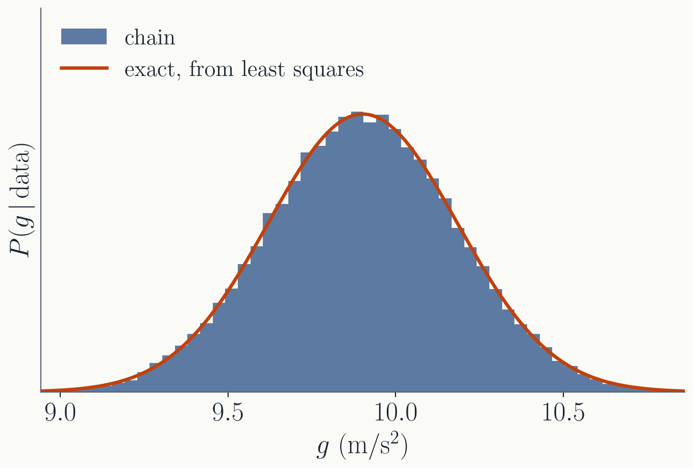
A decay on a background
A signal decays exponentially on top of a constant
background,
$$ y(t) = A\,e^{-t/\tau} + B . $$
The lifetime $\tau$ enters
nonlinearly, so no matrix formula gives the parameters
or their errors.
The prior says what is physically
possible, $A > 0$, $\tau > 0$ and $B \ge 0$, and makes
every allowed value equally probable. A move to a
forbidden value is refused.
The sampler is otherwise unchanged,
with $\chi^2$ computed from the new model.
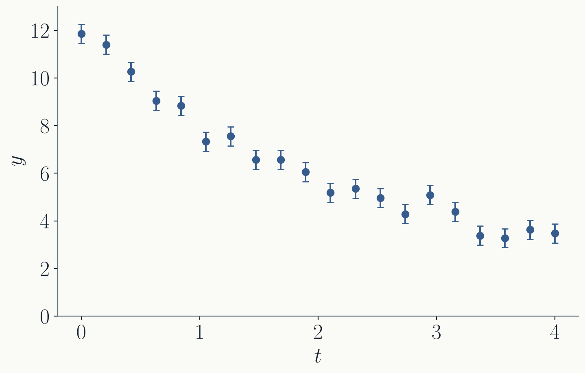
The corner plot
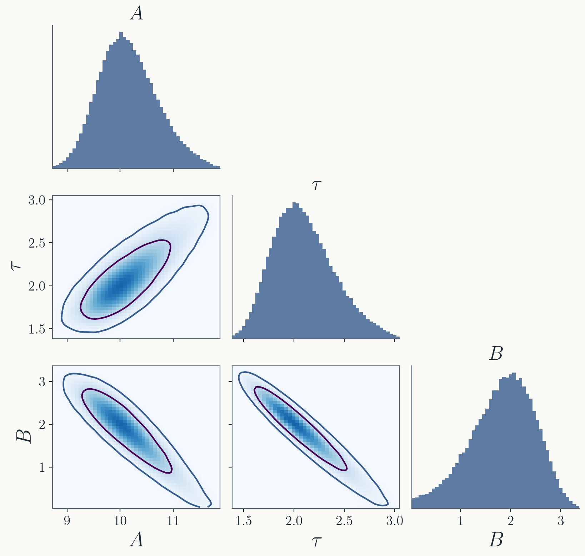
The chain is a cloud of points in the space of $(A,
\tau, B)$. A corner plot shows it one parameter and one
pair at a time.
Each panel on the diagonal is the
histogram of one parameter.
Each panel below the diagonal shows
two parameters against each other. The contours
enclose $68\%$ and $95\%$ of the states.
The histogram of $\tau$ has a longer
tail on one side, so the result is quoted with two
errors, $\tau = 2.07^{+0.34}_{-0.27}$.
Correlated parameters
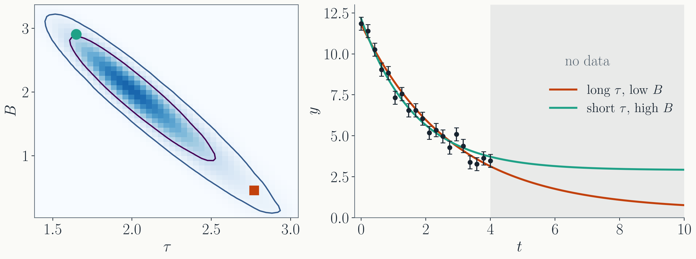
The states lie along a narrow band in the plane of $\tau$
and $B$. A long lifetime with a low background fits the
data as well as a short lifetime with a high
background.
The two curves are states from opposite
ends of the band. They agree where there are data and
separate afterwards.
The data stop before the signal has
reached the background, and that is why the two parameters
cannot be told apart.
A prior from an earlier measurement
Suppose the background was measured beforehand with the
source removed, with the result $B = 2.0 \pm 0.2$. That
knowledge is the prior, a Gaussian in $B$.
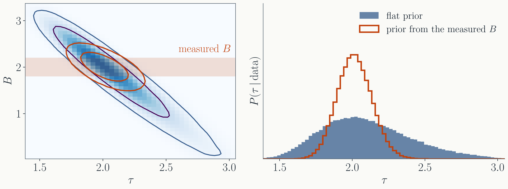
With a flat prior the data allow the
whole band. The measured $B$ keeps only the part of the
band that lies near $B = 2.0$.
$\tau$ and $B$ are correlated, so knowing
$B$ better also fixes $\tau$ better. The posterior of
$\tau$ becomes less than half as wide.
A corner plot from research
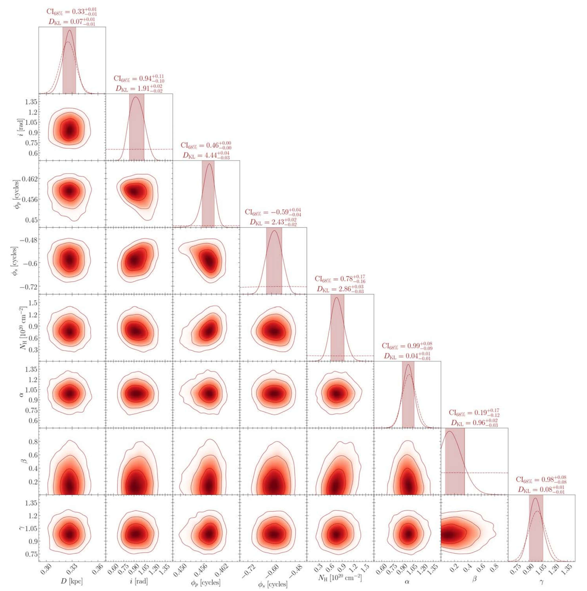
This is the posterior of a model of a pulsar with
eight parameters, fitted to X-ray data.
It is read like the plot for three
parameters. The diagonal gives each parameter with
its error, and the panels below show which pairs are
correlated.
Packages such as emcee
and PyMC provide the sampler. The user
supplies the likelihood and the prior.
Summary
Bayes' theorem turns the probability of the data given
the parameters into the probability of the parameters given
the data. The posterior is proportional to the likelihood
times the prior.
For Gaussian errors the likelihood is
$e^{-\chi^2/2}$. The Metropolis rule needs only the ratio
of the posterior at two sets of parameters, so it produces
samples of the posterior without the normalization
$P(D)$.
The histogram of one parameter over the
chain gives its value and its error, and the corner plot
shows which parameters are correlated. An earlier
measurement enters through the prior and narrows the
posterior.